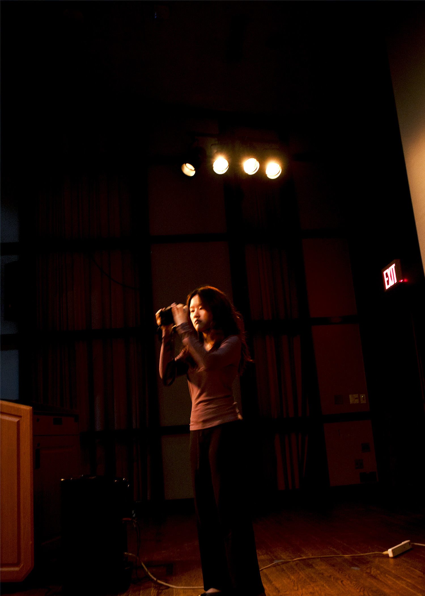

Here is the second image for Homework 2. We went into the theater next door and felt like it could be a good place to take photos, however we soon realized that the lighting of the place was not great. Nonetheless, I wanted to take a photo that had elements of darkness and light to play with contrast. The photo I took of Chloe had both elements even if the lighting could have been better, I also thought as a photo it looks kind of candid but also somewhat modelistic, it just felt very satisfying the composition and the low angle shot. I played with the exposure, brightness, and color balance in order to make the image more viewable and to bring that contrast up.:
